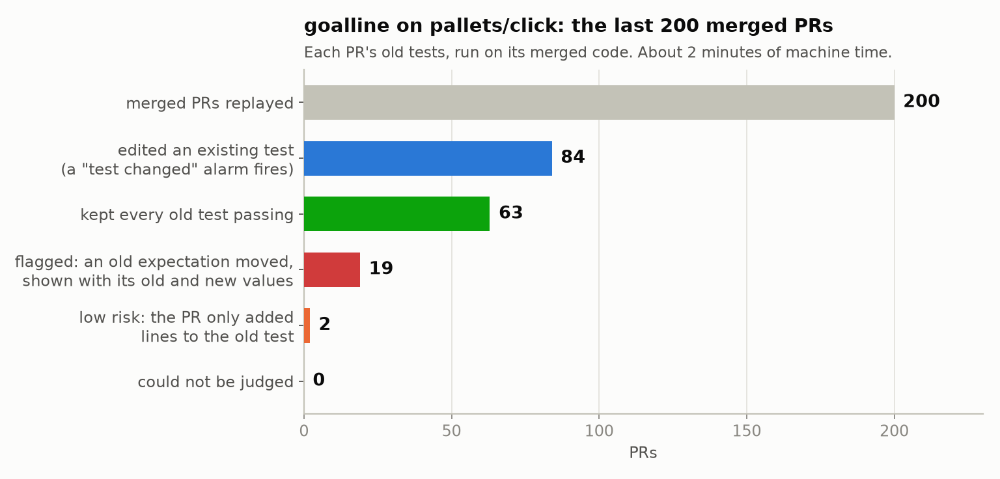

goalline / Benchmark
Replaying 400 merged pull requests of pallets/click and pallets/jinja
goalline history ran goalpost on the last 200 pull requests merged into main of pallets/click and pallets/jinja. 126 edited an existing test, and 31 were flagged with their old and new values. Every flag was a deliberate change that its PR explains in one line, and 4 changed what users see without the changelog saying so.

| pallets/click | pallets/jinja | |
|---|---|---|
| Merged PRs replayed | 200 | 200 |
| Edited an existing test (a "test changed" alarm fires on every one) | 84 | 42 |
| Needs a look: an old expectation moved, shown with its old and new values | 19 | 10 |
| Low risk: the old test fails, but the PR only added lines to it | 2 | 0 |
| Kept every old test passing | 63 | 29 |
| Could not be judged | 0 | 3 |
| Machine time | about 3 minutes | about 2 minutes |
What users see, and the changelog doesn't say
Every flag was a deliberate change. These 4 also changed what users see, and the changelog doesn't mention them: a reviewer sees them only because the old test ran.
- jinja #1383:
no filter named 'f'becameNo filter named 'f'.andNo filter named 'f' found.. - jinja #1136: the undefined-variable warning
missing is undefinedbecame'missing' is undefined; old files import the removedjinja2._compat. - click #3767: output through the null pager to a non-terminal stream loses its colour codes; an internal helper returns a different shape.
- click #3479: case-insensitive
Choicecompletion suggestsau, notAu.
Every flag, and why
The reasons come from each PR's title and text, its changelog lines and click's docs. Test plumbing is a test that imported a private helper the PR removed: nothing users see changed.
pallets/jinja
| PR | What moved | Why | Kind |
|---|---|---|---|
#1621 use posixpath.join when loading template names | package template file names end in foo/test.html, not foo\test.html | template names are joined with / on every OS now | intended (shows on Windows only) |
| #1544 remove deprecated code | overriding the legacy resolve no longer warns (DID NOT WARN) | the deprecated legacy code it warned about was removed | intended |
| #1393 deprecate legacy resolve mode | overriding resolve raises a DeprecationWarning | the deprecation itself (jinja's tests turn warnings into errors) | intended |
| #1392 async support doesn't require patching | the old test files import jinja2.asyncsupport, which is gone | the module was removed; async support is built in | intended |
| #1391 Markup and escape should be imported from markupsafe | jinja2.Markup and jinja2.escape raise a DeprecationWarning | the re-exports are deprecated in favour of markupsafe | intended |
| #1389 unify/rename context function decorators | contextfunction and its siblings raise a DeprecationWarning | renamed to pass_context, pass_eval_context and pass_environment | intended |
| #1383 add 'is filter' and 'is test' tests | no filter named 'f' became No filter named 'f'. and No filter named 'f' found. | filters and tests share their code now; the new error text is in neither the PR text nor the changelog | intended, not in the changelog |
| #1243 deprecate 'autoescape' and 'with' extensions for removal in 3.1 | the autoescape and with extensions raise a DeprecationWarning | both are built in now | intended |
| #1136 Drop Python 2 | the undefined-variable warning missing is undefined became 'missing' is undefined; old files import the removed jinja2._compat | Python 2 support removed and f-strings used everywhere; the new warning text is in neither the PR text nor the changelog | intended, not in the changelog |
| #1133 Revert "Rename to Jinja" | the old test files import jinja | the package rename was reverted to jinja2 | intended |
pallets/click
| PR | What moved | Why | Kind |
|---|---|---|---|
#3877 Add Parameter.spec and deprecate human_readable_name | option 'my_option' is deprecated became The option '--my-option' is deprecated. | messages name options as users type them; the changelog quotes the before and after | intended |
| #3866 Deprecate parameter names that are: not a Python identifier, or a Python Keyword, or not lower-cased | an option named in raises a DeprecationWarning | the deprecation itself | intended |
| #3876 Merge stable into main | the short help of 123 567 9. aaaa bbb is 123 567..., not 123 567 9. | a period followed by a lowercase word no longer ends a sentence ("Fix short help abbreviation", in the changelog) | intended |
| #3767 Refactor pager stream handling | output through the null pager to a non-terminal stream loses its colour codes; an internal helper returns a different shape | pager streams unified; the PR's tests expect the colour change, but neither its text nor its changelog line mentions it | intended, not in the changelog |
#3704 Deprecate isolated_filesystem and document its limits | CliRunner.isolated_filesystem raises a DeprecationWarning | the deprecation itself | intended |
| #3695 Mark clearly functions private status. Deprecated Python 2 utilities. | get_binary_stream, KeepOpenFile, LazyFile and make_default_short_help raise a DeprecationWarning | Python 2 era utilities deprecated | intended |
#3678 Fix parsing when a parameter is named help | to_info_dict() shows the help option under _click_default_help | the help option's internal name changed so a parameter named help works; in the changelog | intended |
#3563 Merge stable into main after CHANGES rST to Markdown conversion | the old test file imports click._compat.MAC, which is gone | a private constant used only to skip a test was removed while fixing a test race | test plumbing |
| #3479 Merge stable into main | case-insensitive Choice completion suggests au, not Au | completion goes through normalize_choice() now; the changelog mentions Enum completion, not the lowercased suggestions | intended, not in the changelog |
#3391 Add capture mode to CliRunner and revert default fileno exposure | CliRunner streams no longer have a fileno() | the revert in the title; a new capture mode brings it back | intended |
#3228 Add NoSuchCommand exception with suggestions for misspelled commands | No such option: --foo became No such option '--foo'., and Did you mean --count? became Did you mean '--count'? | error messages reformatted for consistency, as the PR says | intended |
| #3126 Fix: Ensure fish completion handles multiline help strings correctly | fish completion output escapes the newlines in help | the fix itself | intended |
#3363 Auto-detect type=UNPROCESSED when flag_value has non-basic types | enum, class and int flag values arrive as objects, not strings | the point of the PR | intended |
| #3239 Reconcile default value passing and default activation | default=True with flag_value=False activates the flag: Flag [y/N] became Flag [Y/n], and Enter gives True | what default=True means for flags was redefined | intended |
#3225 Fix callable flag_value being instantiated when used as a default | a class used as flag_value arrives as the class, not an instance | the fix itself | intended |
#2991 fix a race in click.testing.StreamMixer's finalization, seen in a multi-threaded context | the captured streams close when isolation ends, so reading them afterwards fails | the race fix (in the changelog); the PR moved the tests' checks inside the block | intended |
#2956 Fix reconciliation of envvar with default, flag_value and type parameters for flag options | flag values from env vars and defaults (upper where it was False) | the fixes the title lists | intended |
| #2934 Raise an exception on end of input in CliRunner | prompts in CliRunner abort at the end of input (Aborted!) instead of reading empty strings | match a real terminal, where the end of input raises | intended |
#2796 Expand Choice token normalization + make generic | custom ParamType.get_metavar() is called with ctx; Choice info dicts changed | Choice made generic; the new ctx argument is in click's 'support multiple versions' guide | intended |
| #3473 Add help parameter to arguments | to_info_dict() gains help for arguments (lines only added) | the feature itself | intended (low risk) |
#3371 ParamType and other typing improvements | importing click also imports abc now (lines only added to the allowed list) | ParamType became an abstract base class | intended (low risk) |
What it found in goalline itself
jinja found two sources of false flags in goalline, both fixed in 0.13.0. Re-run with both fixes, click's numbers did not change.
- Which files are tests. goalline took any file named
test_*.pyortests.pyas a test, so jinja'ssrc/jinja2/tests.py(code whose functions are namedtest_odd) and the scripts in itsexamples/were flagged. It now takes the files pytest itself would collect:python_filesundertestpaths, from the project's pytest config. - Whose failure it is. On Python 3.11, some of jinja's 2020 tests fail on their own code (tracebacks print differently), which read as moved expectations. goalpost now runs a failing old test on the old code too, and counts it only if it passes there.
How it was run
- The last 200 pull requests merged into
main, followingmain's first parents. A PR merged into another branch first (both projects keep astablebranch) is not among them. - Each PR was judged on its merge commit against its first parent, so it sees the change exactly as it landed.
- click, up to 2026-10-04: Python 3.11, pytest 9.0.2.
- jinja: Python 3.11; 103 PRs with pytest 9.0.2 and MarkupSafe 3.0.4, the 97 from 2020-21 (their code imports markupsafe.soft_unicode and uses py.path pytest hooks) with pytest 6.2.5 and MarkupSafe 1.1.1. jinja's last push was in June 2025, so its 200 PRs reach back to January 2020.
Not judged on jinja:
- #1525: tests/test_debug.py: its failing old test fails on its own code on Python 3.11 too (tracebacks print differently).
- #1169: tests/test_loader.py: 6 failing old tests fail on their own code here too.
- #1233: tests/test_idtracking.py: an old test crashes inside the new code before its expectations.
A flag is not a bug report
In #3239, a click --flag option with prompt=True, default=True, flag_value=False went from Flag [y/N]: (Enter gives False) to Flag [Y/n]: (Enter gives True), with three lines of a test table edited to match and all 11 CI checks green. It was intended. That is the point: a reviewer sees the change and its values, not just a green check.
click was also judged as each PR was first opened (--first-heads, 199 PRs): no PR edited a test to hide a change that review then took back.
Reproduce it
Clone the project, install it, pytest and its test dependencies into a virtualenv, activate it, and run:
npx github:intikhab49/goalline history --from-git --limit 200 -- python -m pytest {files}jinja's PRs from 2020 and early 2021 need the packages of that time (pytest 6.2.5, MarkupSafe 1.1.1): run those with a second virtualenv and --only <PR numbers> into the same --out folder.
Run it on your repository
npx github:intikhab49/goalline history --from-git -- npx jest {files}It writes goalline-history/report.md: the PRs that need a look, with the old and new values, next to the number a 'test file changed' alarm would fire on. It runs one check at a time while the machine is idle, and resumes where it stopped.
Related
- How it works: old tests on new code, the verdicts, and what it can't catch
- Claude Code hook: a Stop hook that won't let the agent finish until it explains a moved test
- GitHub Action: one step in a workflow, with Jest, Vitest or pytest
- prove-red: new tests must fail on the base code first, or they test nothing
- Skip what passed: signed receipts keyed by the git tree, and safe reuse
- Database inputs: the database schema on the receipt, with --input db=pg
- The clock: which tests read the real clock, and passes that expire
- Commands: every command and option